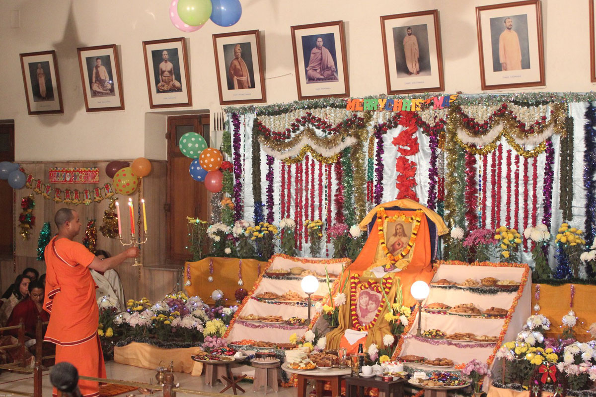
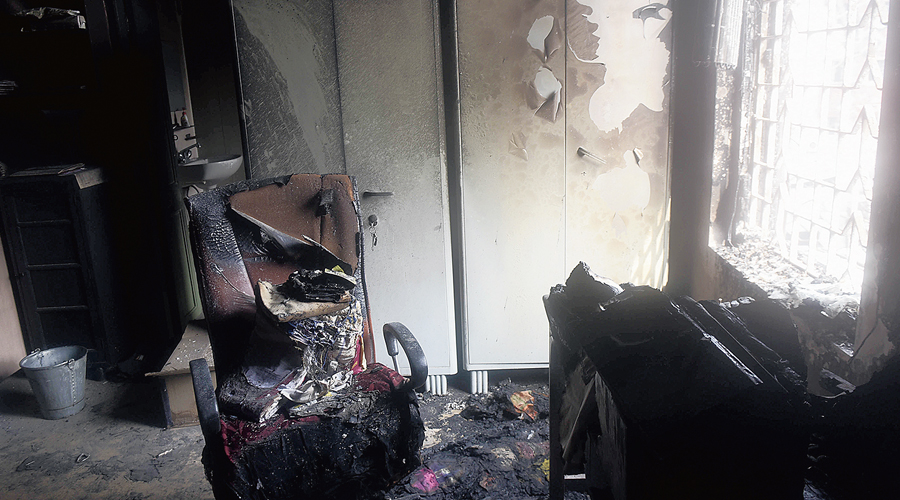

website
what'new
Ramkrishna misson vivakananada collage
The Ramakrishna Mission Boys’ Home at Rahara, a branch centre of the Ramakrishna Mission, was founded in 1944 as an orphanage with a nucleus of 37 boys rendered orphan by the Great Bengal Famine of 1942-1943. Since then the Home grew in dimensions and activities adhering to the principle of service to mankind in the spirit of worship. Today, the Home is an educational complex with several schools and colleges wherein nearly four thousand students are receiving education and training in different subjects and trades according to the aptitude of each individual. The Ramakrishna Mission Vivekananda Centenary College which forms an integral part and unit of this educational complex is owned and managed by the Ramakrishna Mission. The foundation stone of the College was laid by Srimat Swami Vireswaranandaji Maharaj, the then General Secretary of the Ramakrishna Mission, on 3rd December, 1961 and the College started functioning in July, 1963. The College was established with a view to commemorating the First Birth Centenary of Swami Vivekananda, the Illustrious Patriot-Saint of India and with a view to imparting a general education on a religious background in the light of the teachings of Ramakrishna-Vivekananda so that the young pupils may get ample opportunities to build up their character to make themselves useful to their families and to fulfill at the same time their basic obligation to the country. The college was established and is being maintained and administered by the Ramakrishna Mission. There is no provision for hostel accommodation.
NEWS ABOUT ENVIRONMENT
-
West Bengal: Ramakrishna Mission gears up for Christmas Eve
KOLKATA: Even though Covid restrictions are in place and Belur Math, the headquarters of the Ramakrishna Mission, is out of bounds to devotees, Christmas Eve will be celebrated with equal fervour by the monks of the order here and across all centres of the RKM across the world.
-
RKM lost rare manuscripts to Bagbazar blaze
A number of rare manuscripts and religious texts that would be used to cross-check information before it was printed in the Udbodhan magazine have been damaged by Wednesday’s fire in Bagbazar, monks of the Ramakrishna Math and Ramakrishna Mission said. These books were kept on the first and the second floor of the Udbodhan building, in Bagbazar’s Udbodhan Lane, from where the order’s mouthpiece Ubodhan is published. “We are yet to assess the number of manuscripts that have been damaged by the fire,” said Swami Suvirananda, the general secretary of the Math and Mission. “It was a devastating fire and our hearts go out to those who have been severely affected.” ADVERTISING Senior monks at the Udbodhan building said the damaged manuscripts and books played a key role in bringing out the magazine, the first copy of which was released on January 14, 1899, a year after the Udbodhan office was set up. The printing press was set up in a house in Ramchandra Maitra Lane in north Calcutta. “Some of these books were rare copies of old manuscripts on the Vedas and are no more in circulation,” said Swami Nityamuktananda of Udbodhan. “We would fall back on them to cross-check any information before an article would get printed in the magazine. The room of the magazine’s editor has been damaged, too.” More than 100 shanties next to the Udbodhan building were gutted in a fire that triggered serial explosions, probably from LPG cylinders, on Wednesday evening. The leaping flames, which reached the Udbodhan building’s second floor, damaged several windows and wooden furniture, apart from the rare manuscripts and books. “Mayer Bari or Mother’s House in Bagbazar, which is under Ramakrishna Math, has remained unscathed. Some items at the Udbodhan building, under Ramakrishna Mission, have been damaged,” Swami Suvirananda said. “That includes about 40 wooden windows fitted with glasses, seven air conditioning units, 25 chairs and tables, electrical cables and a generator.”
Manoj Prasad
Manoj Prasad